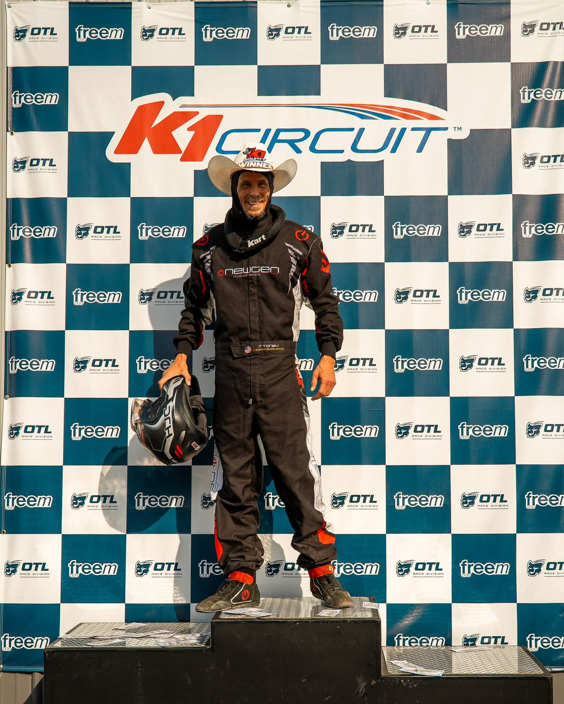
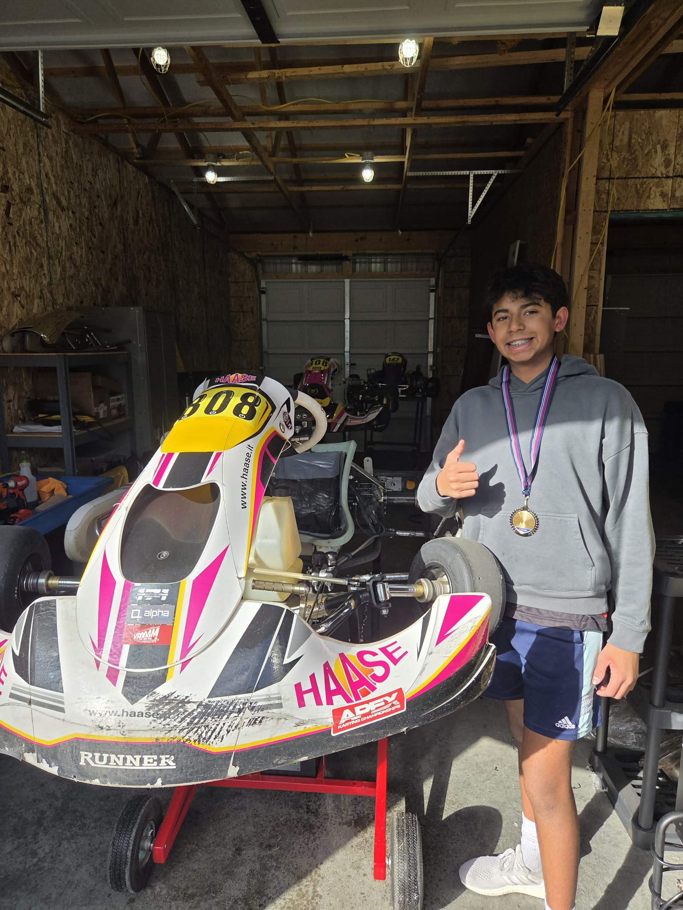
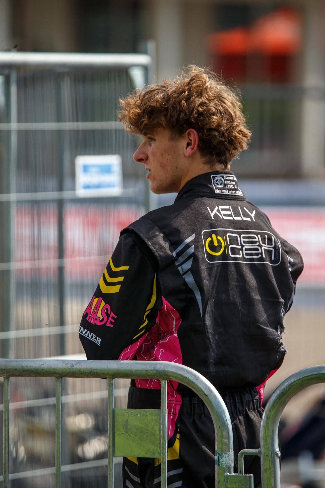
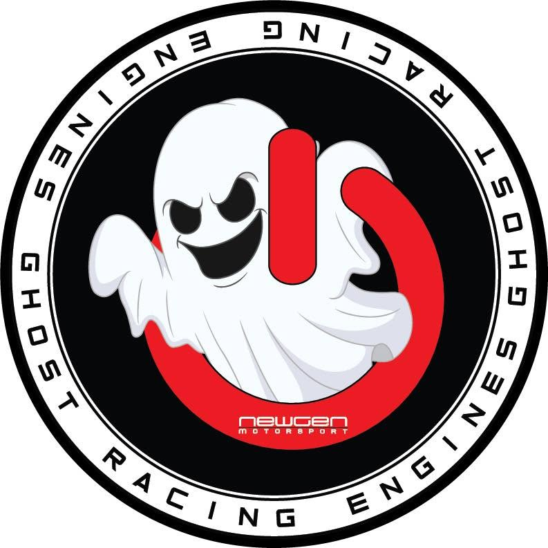

The roster
Get to know the drivers behind the wheel.

— Driver photoTroy Toney #24
Five years in, Troy Toney is still the first one at the track and the last one to leave. A SIRA 2024 Series champion, he's backed up the trophy case with the same work that built it — clean setups, honest feedback, and a program worth trusting. He built Troy Toney Racing not just to race, but to give other drivers that same shot: the kind where a mistake gets a debrief instead of a lecture, and every driver on the roster knows someone's got their back. Ask anyone on the team and they'll tell you: Troy's as much a mentor as he is a fierce competitor, and he wouldn't have it any other way.
Season podiums
Best finish
Years racing
 —
Driver photo
—
Driver photo
Nic Bailey #10
Nic Bailey has been chasing tenths in 206 Masters for three years now, and he'll be the first to admit the learning curve doesn't stop. Every race weekend is a mix of small wins, bigger lessons, and the occasional reminder that karting keeps everyone humble. He's all in on getting better lap by lap — and having a good time doing it.
Season podiums
Best finish
Years racing

— Driver photoJiju Sivakumar #808
Jiju Sivakumar ran a half season last year, and it was enough to put him on top — he took the SIRA 2025 LO206 Juniors Championship before even racing a full year. Now he's taking on his first full season in both 206 Junior and KA Junior. Balancing two classes is no small task, but it suits him — Jiju races with a passion that's obvious from the moment he's on track, backed by a smart, calculated approach and a level of ambition that makes it clear he's just getting started.
Season podiums
Best finish
Years racing

— Driver photoColten Kelly #900
Colten Kelly is two and a half years into karting and now in his second full season of 206 Senior — and the results are showing it. He finished runner-up in the championship his first full season, then came back and took the points lead in his second. His driving style is built on smarts first, reading the race and picking his moments — but every weekend, he's bringing a little more aggression to back it up.
Season podiums
Best finish
Years racing
 —
Driver photo
—
Driver photo
Connor Dunk #444
Connor Dunk is the newest face in the 206 Senior class, and he knows it — every race weekend is another lesson, and he's soaking up every bit of it. What stands out most is how well he listens: to his coaches, his data, his own mistakes. Still early in the learning curve, but the kind of rookie who's going to move up it fast.
Season podiums
Best finish
Years racing
The kit
Chassis
Haase Chassis across the board. LO206 model and KA model.
Engines

LO206 engines built by Ghost Racing Engines.
Support
Trailer, pit setup, and the tools that keep both karts race-ready every weekend.